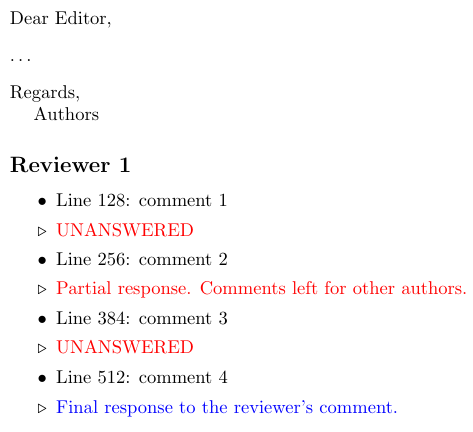

The following is a template for responsponding to the revier’s comments obtained from a paper journal submission.
Reacting to a critique of the previous template I modified the template slightly – the template now contains two distinct commands: \rev and \done where the former is meant to contain comments that are not yet dealt with, and the latter is for the finished comments.
Simply copy the reviewer’s comments and wrap them in \rev{comment}{} first, then add your notes to the second empty brackets.
When the comment is resolved, change \rev to \done.
See the final formatting below.

This review response template is put into public domain and can be used and modifier without any restrictions.
\documentclass[a4paper,USenglish]{article}
% smaller margins
\usepackage{fullpage}
% edit vertical spacing of the item lists
\usepackage{enumitem}
\setlist{topsep=0pt, itemsep=0pt}
% macros for review response
\usepackage{xcolor}
\newcommand{\rev}[2]{ \item #1 \item[$\triangleright$] \if\relax\detokenize{#2}\relax {\color{red}UNANSWERED} \else {\color{red}#2} \fi }
\newcommand{\done}[2]{ \item #1 \item[$\triangleright$] \if\relax\detokenize{#2}\relax {\color{red}UNANSWERED} \else {\color{blue}#2} \fi }
\begin{document}
\noindent
Dear Editor,
\vspace{8 pt}\\
\dots
\vspace{8 pt}\\
Regards,\\
\phantom{,}\quad Authors
\subsection*{Reviewer 1}
\begin{itemize}
\rev{Line 128: comment 1}{}
\rev{Line 256: comment 2}{Partial response. Comments left for other authors.}
\done{Line 384: comment 3}{}
\done{Line 512: comment 4}{Final response to the reviewer's comment.}
\end{itemize}
\end{document}